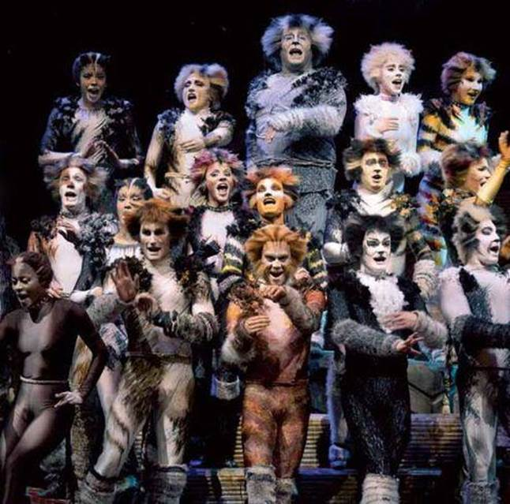

目录
Ø 歌舞伎町
Ø 杰利可猫
Ø 黛娜
出典：
歌舞伎町，为日本东京都新宿区的町（街廓）名，餐饮店、娱乐场所、电影院等集中地，是日本少数的大型红灯区之一。
现行行政分区为歌舞伎町一丁目与歌舞伎町二丁目。全域实施住居表示。人口2,606人（2015年8月1日）。
Figure 1. 歌舞伎町夜景
杰利可猫（音译），也叫猫女（catwomen），出自音乐剧《猫》，是由英国作曲家安德鲁·劳埃德·韦伯根据T·S·艾略特的诗集《老负鼠的猫经》及其他诗歌所编写的一部音乐剧。
在艾略特的诗歌集中，这些黑白斑驳的猫被描绘成喜欢在月光下的夜晚跳舞。
另一方面，在音乐剧中，它们是不受人类控制的独立的猫，并且有一个通宵跳舞的故事，以寻找通往天堂的门票。

Figure 2. 音乐剧《猫》中的杰利可猫
《爱丽丝漫游奇境记》中主角爱丽丝家养的一只雌性黑猫。在《爱丽丝漫游奇境记》中她没有和爱丽丝一起进入奇境，但是在《爱丽丝镜中奇遇记》里她是否参与了镜中冒险则众说纷纭。